Limits at Infinity#
Discussion & Definitions#
The term limit at infinity is really asking the question, what is a function doing as the values of x get arbitrary large either positively or negatively. Another way to say this is what is the end behavior of the function, what is it doing when its graph goes off the screen in either direction. Remember that infinity is not a number so we cannot approach infinity in tht sense. When we say we are approaching infinity we really mean we are letting x get arbitrarily large. With this in mind we define our limits at infinity.
Definition: Limits at Infinity
Let \(f(x)\) be a function defined at all values in an open interval \((c, \infty)\). If the values of the function \(f(x)\) approach the real number L as the values of x increase without bound, then we say that the limit of f(x) as x approaches \(\infty\) is L. That is, as x gets arbitrarily large, \(f(x)\) gets closer to L. Symbolically we write,
Let \(f(x)\) be a function defined at all values in an open interval \((-\infty, c)\). If the values of the function \(f(x)\) approach the real number L as the values of x decrease without bound, then we say that the limit of f(x) as x approaches \(-\infty\) is L. That is, as x gets arbitrarily small (that is, large negatively), \(f(x)\) gets closer to L. Symbolically we write,
For example, if we graph,
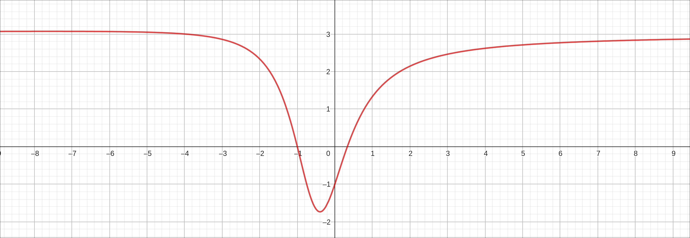
\(f(x) = \frac{3 x^{2} + 2 x - 1}{x^{2} + x + 1}\)#
Looking at the graph at the two ends it does appear that the graph is leveling out to a single number \(L = 3\) off to the right. It also appears that the graph is leveling out to a single number \(L = 3\) off to the left. In our notation we would write,
We can also attack this numerically, we simply let the x values get large and plug them into the function to see the corresponding outputs. From the values in the second column we would conclude that same as we did with the graph.
As another example, if we graph,
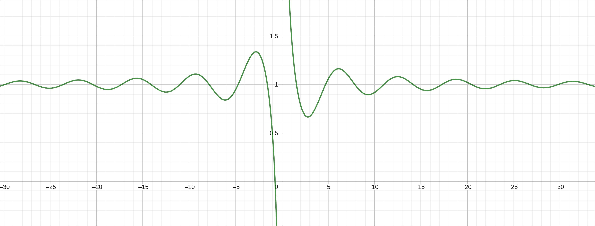
\(f(x) = 1 + \frac{\cos{\left(x \right)}}{x}\)#
Looking at the graph at the two ends it does appear that the graph is leveling out to a single number \(L = 1\) off to the right. It also appears that the graph is leveling out to a single number \(L = 1\) off to the left. In our notation we would write,
Definition: Horizontal Asymptote
If either
then we say that the line \(y = L\) is a horizontal asymptote of \(f\).
Going back to our previous examples. If we graph,
Along with the line \(y = 3\) we get,
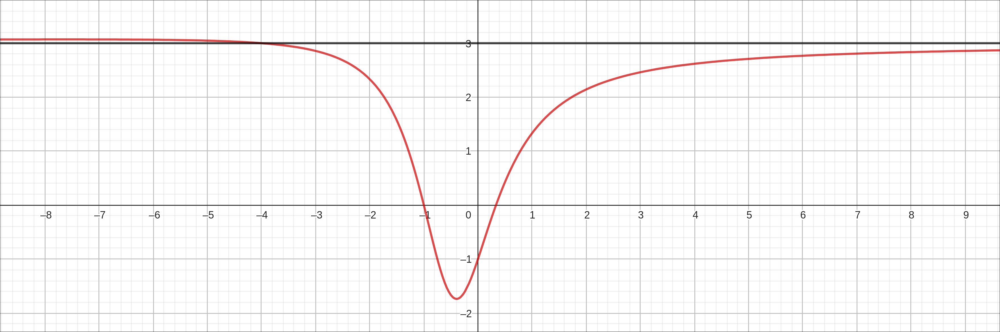
\(f(x) = \frac{3 x^{2} + 2 x - 1}{x^{2} + x + 1}\) and horizontal asymptote.#
Notice how the two lines get close to each other at the two ends. This is really what an asymptote means, a function that another function gets arbitrarily close to. Hence the line \(y = 3\) is the horizontal asymptote to our function.
If we graph,
Along with the line \(y = 1\) we get,
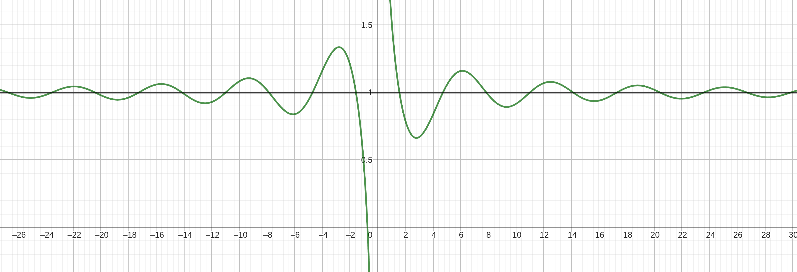
\(f(x) = 1 + \frac{\cos{\left(x \right)}}{x}\) and horizontal asymptote.#
Hence the line \(y = 1\) is the horizontal asymptote to our function.
On the other hand, if we graph
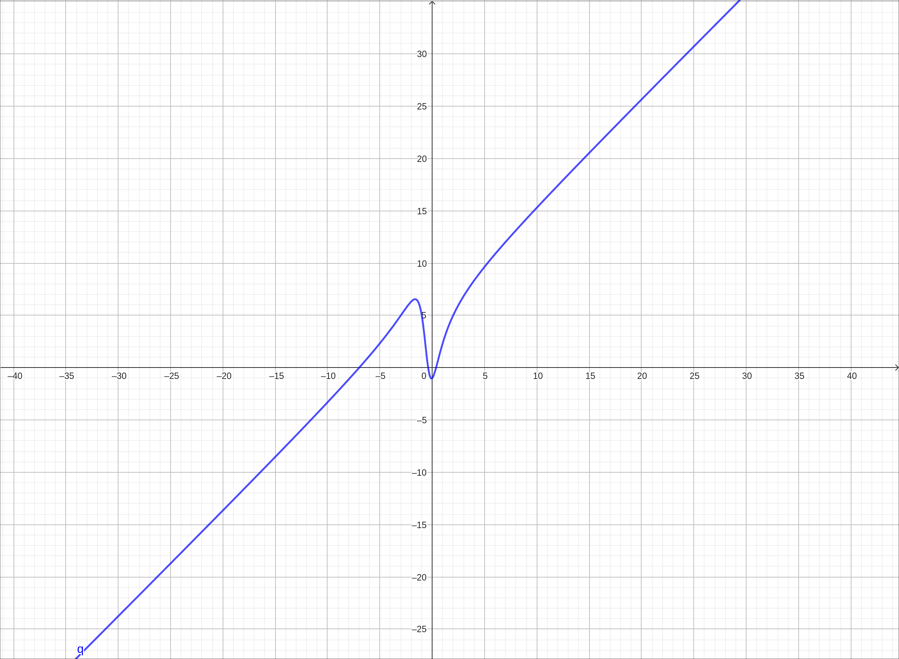
\(f(x) = \frac{x^{3} + 7 x^{2} - 1}{x^{2} + x + 1}\)#
It does not look like the function is leveling out at the ends, and it is not. So we would say that,
and consequently the function does not have a horizontal asymptote. In the next section we will investigate this more closely but from the graph it appears we can go a little further and say,
Although this function does not have a horizontal asymptote, that does not mean that it does not heva an asymptote. If do long division on the function we get,
If we remove the fraction at the end and plot \(y = x+6\) along with the original function we get,
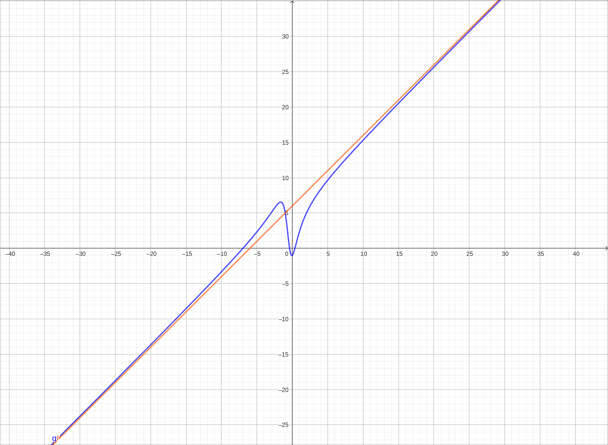
\(f(x) = \frac{x^{3} + 7 x^{2} - 1}{x^{2} + x + 1}\) with slant asymptote.#
Clearly these two curves are getting close to each other as x gets arbitrarily large. So the line \(y = x+6\) is an asymptote to our function. These are called slanted asymptotes or oblique asymptotes. This can be generalized further and we will in subsequent sections. Another visualization we can make about this slanted asymptote is if we graph the difference between the two functions,
we get,
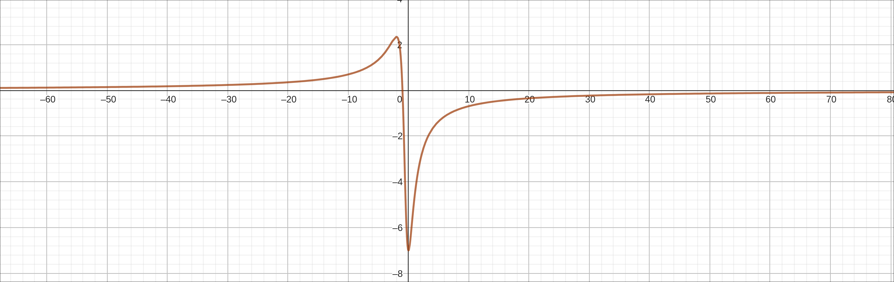
\(\frac{x^{3} + 7 x^{2} - 1}{x^{2} + x + 1} - (x+6)\)#
Since this function has a horizontal asymptote at \(y = 0\) our original function has \(y = x+6\) as its slanted asymptote.
Example: \(f(x) = \frac{3 x^{2} + 2 x - 1}{x^{2} + x + 1}\)#
GeoGebra#
To graph the function you can use the following syntax,
(3 x^2+2 x-1)/(x^2+x+1)
\(f(x) = \frac{3 x^{2} + 2 x - 1}{x^{2} + x + 1}\)#
Using the spreadsheet tool and methods from the previous sections we could produce the same numerical attack, we will not do that here. We can also attack this algebraically, GeoGebra can do infinite limits. Select a new cell and type in limit select the limit option, put in f as your function and inf as the point (inf in GeoGebra is \(\infty\)) the result will be 3. Do the same in the next cell except use -inf as the limit point and again the result is 3. This algebraically confirms our conclusions.
CLAE#
To graph the function you can use the following syntax,
(3*x^2+2*x-1)/(x^2+x+1)
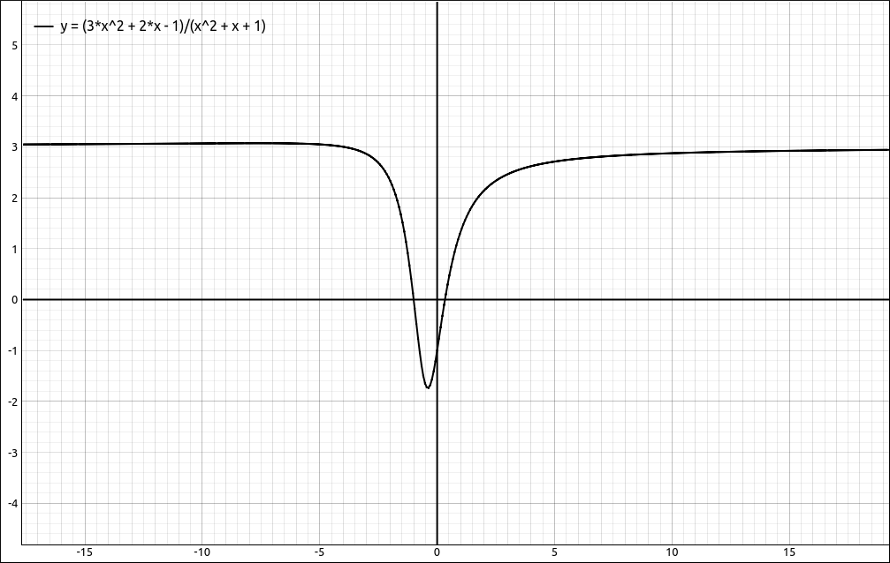
\(f(x) = \frac{3 x^{2} + 2 x - 1}{x^{2} + x + 1}\)#
Using the spreadsheet tool and methods from the previous sections we could produce the same numerical attack, we will not do that here. We can also attack this algebraically, CLAE can do infinite limits. Select the function in the CAS, then select Calculus > Limit, variable is x and the limit point id oo (two small o’s represent \(\infty\) in CLAE). The direction does not need to be changed, the infinity overrides the direction selection. The result will be 3. Do the same again but this time use -oo for \(-\infty\) and again we get the result of 3. This algebraically confirms our conclusions.
Maxima#
To graph the function you can use the following syntax,
kill(all)
f(x):=(3*x^2+2*x-1)/(x^2+x+1)
wxplot2d([f(x)], [x,-50,50], [y,-5,5])
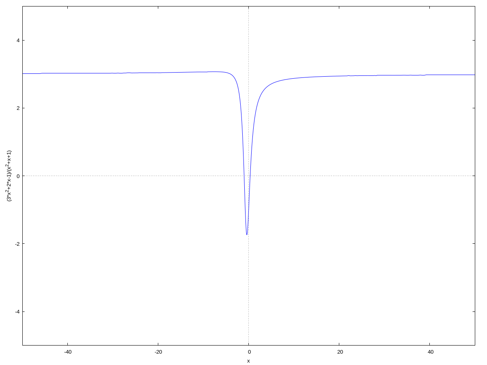
\(f(x) = \frac{3 x^{2} + 2 x - 1}{x^{2} + x + 1}\)#
For an algebraic approach run the following commands,
limit(f(x),x,inf)
and
limit(f(x),x,-inf)
or
limit(f(x),x,minf)
Each of these commands will return 3, algebraically confirms our conclusions.
Example: \(f(x) = 1 + \frac{\cos{\left(x \right)}}{x}\)#
GeoGebra#
To graph the function you can use the following syntax,
cos(x)/x+1
\(f(x) = 1 + \frac{\cos{\left(x \right)}}{x}\)#
Use the algebraic methods in the first example to algebraically calculate the limits at infinity. All of our methods lead us to the conclusions,
CLAE#
To graph the function you can use the following syntax,
cos(x)/x+1
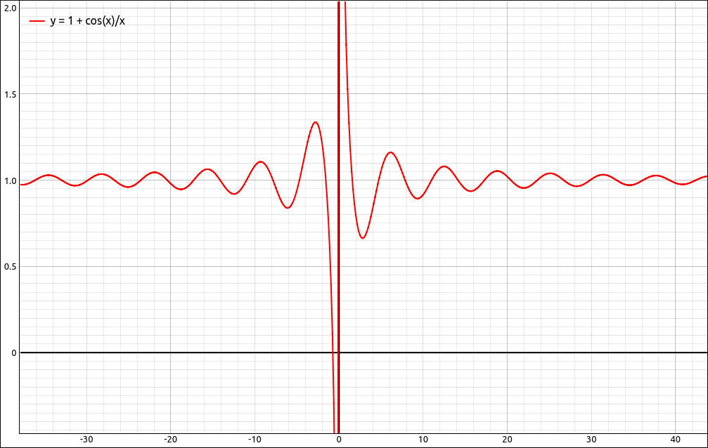
\(f(x) = 1 + \frac{\cos{\left(x \right)}}{x}\)#
Use the algebraic methods in the first example to algebraically calculate the limits at infinity. All of our methods lead us to the conclusions,
Maxima#
To graph the function you can use the following syntax,
kill(all)
f(x):=cos(x)/x+1
wxplot2d([f(x)], [x,-50,50], [y,-1,2])
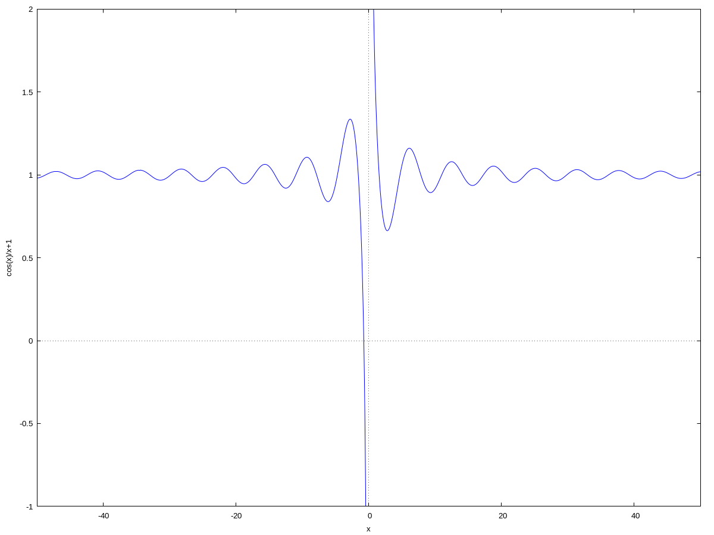
\(f(x) = 1 + \frac{\cos{\left(x \right)}}{x}\)#
Use the algebraic methods in the first example to algebraically calculate the limits at infinity. All of our methods lead us to the conclusions,
Example: \(f(x) = \frac{x^{3} + 7 x^{2} - 1}{x^{2} + x + 1}\)#
GeoGebra#
To graph the function you can use the following syntax,
(x^3+7 x^2-1)/(x^2+x+1)
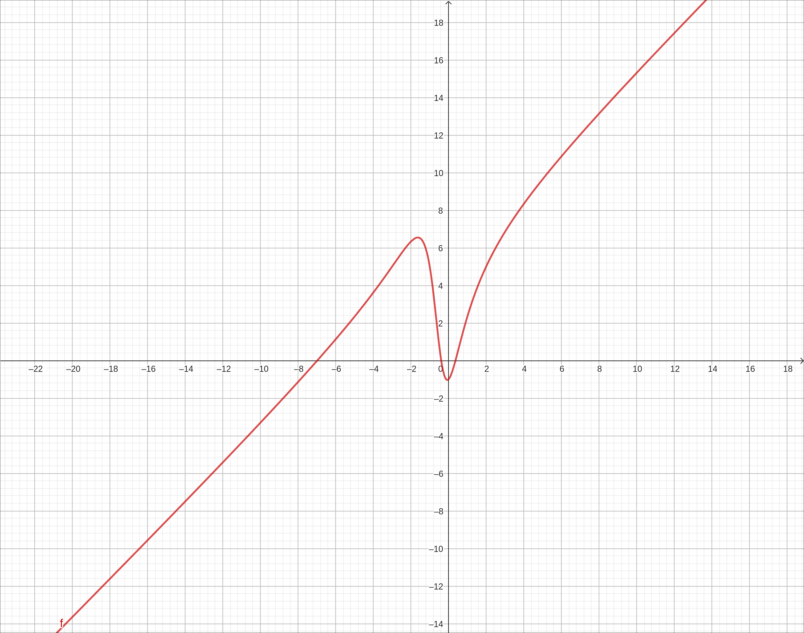
\(f(x) = \frac{x^{3} + 7 x^{2} - 1}{x^{2} + x + 1}\)#
Use the algebraic methods in the first example to algebraically calculate the limits at infinity. All of our methods lead us to the conclusions that both infinite limits do not exist.
From the discussion above about this function we know that there is a slanted asymptote \(y = x+6\) to this function. We determined that by doing long division on the expression,
resulting in
In GeoGebra we can do this calculation with the partial fractions function. Start typing in partialfractions select the PartialFractions from the popup menu, and input f as the function and you will get the above result. Note that the PartialFractions function does more than just long division but that is part of it. Now to graph the asymptote just type in x+6 into a new cell or select Duplicate Output from the cell’s menu and then remove the fractional portion in the new cell. Either way you will get.
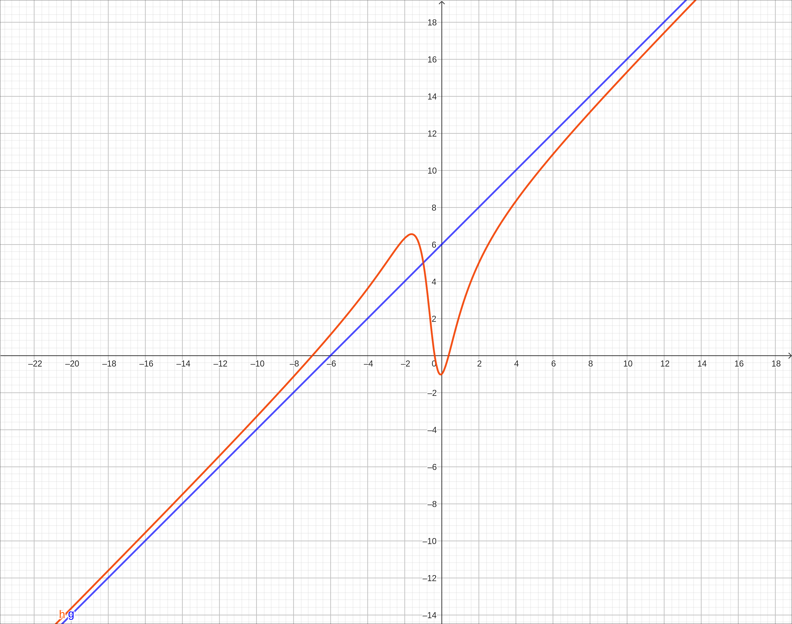
\(f(x) = \frac{x^{3} + 7 x^{2} - 1}{x^{2} + x + 1}\) with slant asymptote.#
CLAE#
To graph the function you can use the following syntax,
(x^3+7*x^2-1)/(x^2+x+1)
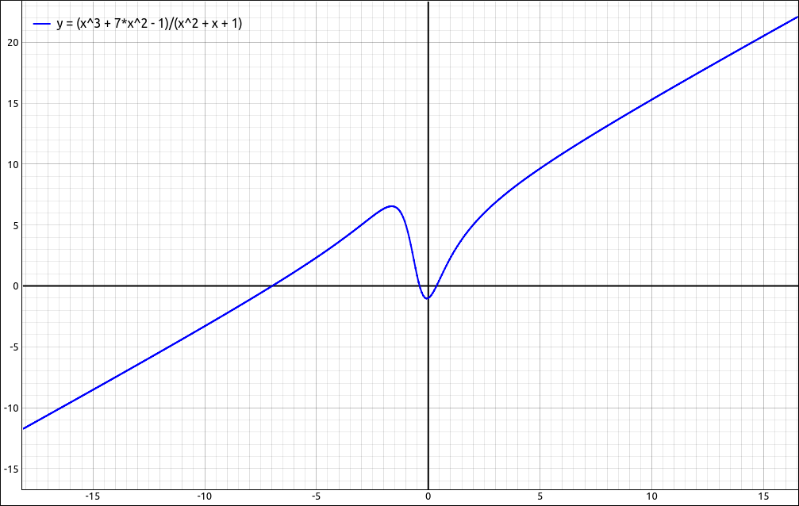
\(f(x) = \frac{x^{3} + 7 x^{2} - 1}{x^{2} + x + 1}\)#
Use the algebraic methods in the first example to algebraically calculate the limits at infinity. All of our methods lead us to the conclusions that both infinite limits do not exist.
From the discussion above about this function we know that there is a slanted asymptote \(y = x+6\) to this function. We determined that by doing long division on the expression,
resulting in
In CLAE we can do this calculation with the partial fractions function. Select the function in the CAS, then select Algebra > Partial Fractions, the variable should be x and the selector can remain as Rational Numbers. The result will be,
Note that the Partial Fractions function does more than just long division but that is part of it. Now to graph the asymptote just type in x+6 into the CAS input bar or double-click the partial fractioned expression to copy it to the CAS input bar and remove the fractional portion. Either way you will get.
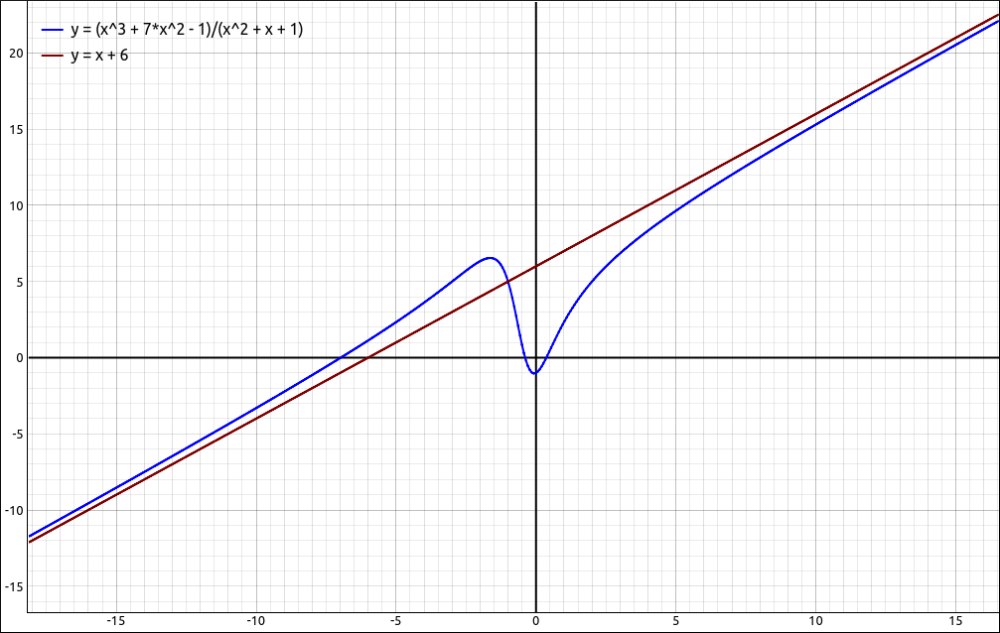
\(f(x) = \frac{x^{3} + 7 x^{2} - 1}{x^{2} + x + 1}\) with slant asymptote.#
Maxima#
To graph the function you can use the following syntax,
kill(all)
f(x):=(x^3+7*x^2-1)/(x^2+x+1)
wxplot2d([f(x)], [x,-20,20], [y,-20,20])
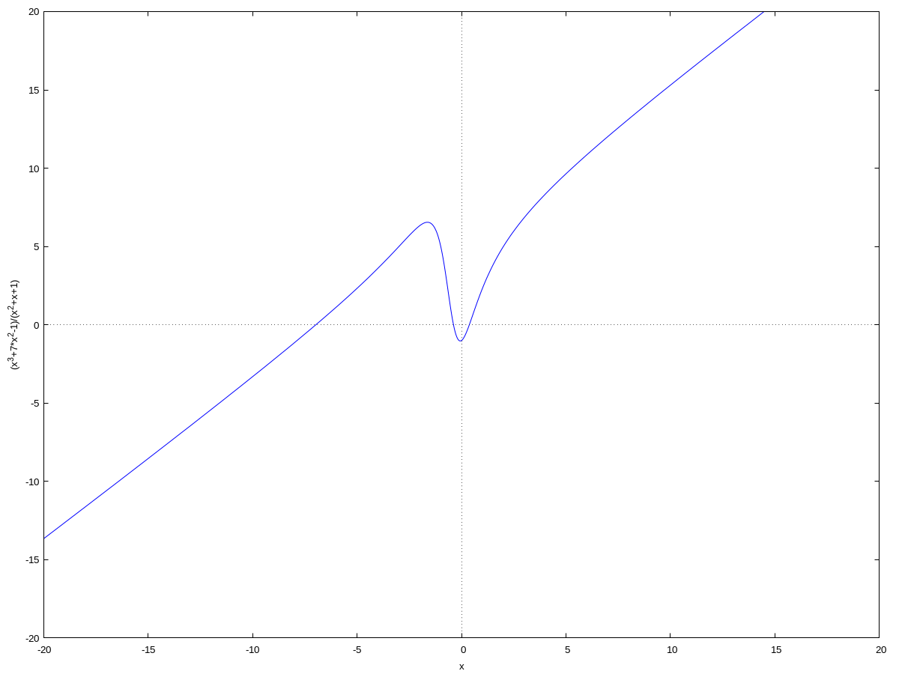
\(f(x) = \frac{x^{3} + 7 x^{2} - 1}{x^{2} + x + 1}\)#
Use the algebraic methods in the first example to algebraically calculate the limits at infinity. All of our methods lead us to the conclusions that both infinite limits do not exist.
From the discussion above about this function we know that there is a slanted asymptote \(y = x+6\) to this function. We determined that by doing long division on the expression,
resulting in
In Maxima we can do this calculation with the partial fractions function.
partfrac(f(x),x)
Note that the partfrac function does more than just long division but that is part of it. You can graph both of these together with the command,
wxplot2d([f(x), x+6], [x,-20,20], [y,-20,20])
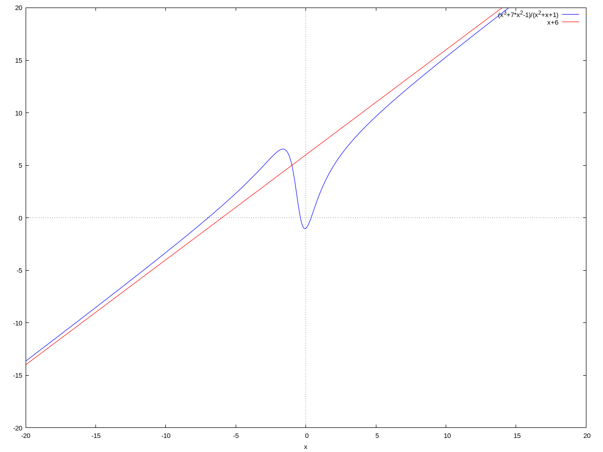
\(f(x) = \frac{x^{3} + 7 x^{2} - 1}{x^{2} + x + 1}\) with slant asymptote.#
Example: \(f(x) = \tan^{-1}(x)\)#
It is possible to have two different horizontal asymptotes for a function, one to the right and a different one to the left, \(f(x) = \tan^{-1}(x)\) is an example of such a function.
GeoGebra#
To graph the function you can use the following syntax,
atan(x)
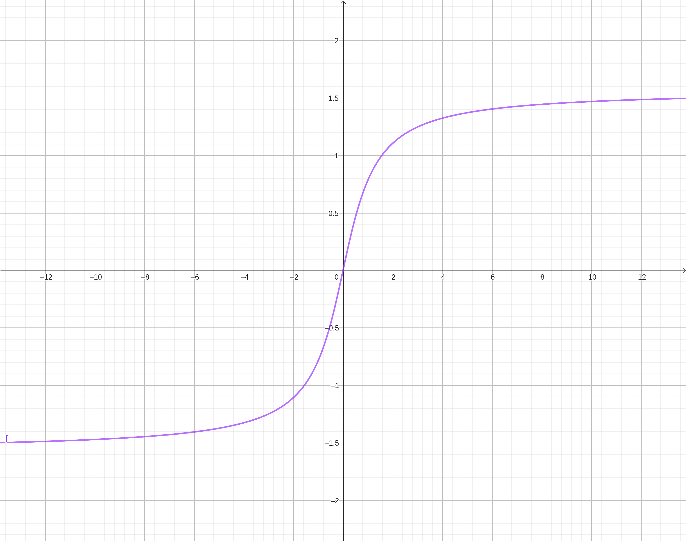
\(f(x) = \tan^{-1}(x)\)#
From the graph it appears that there is a horizontal asymptote to the right at about 1.5 and one to the left at about \(-1.5\). If we use the limit command we get 1.5708 and -1.5708. The exact values here are \(\pi/2\) and \(-\pi/2\). GeoGebra will sometimes approximate values.
CLAE#
To graph the function you can use the following syntax,
atan(x)
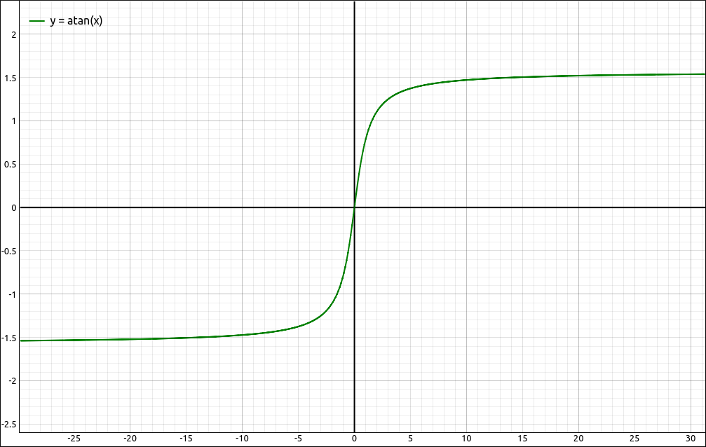
\(f(x) = \tan^{-1}(x)\)#
From the graph it appears that there is a horizontal asymptote to the right at about 1.5 and one to the left at about \(-1.5\). If we use the limit command we get the exact values of \(\pi/2\) and \(-\pi/2\). We can graph these with the curve fairly easily, just put the two values in a list,
[-pi/2, pi/2]
Then drag them from the CAS to the graph, they should come in as horizontal lines,
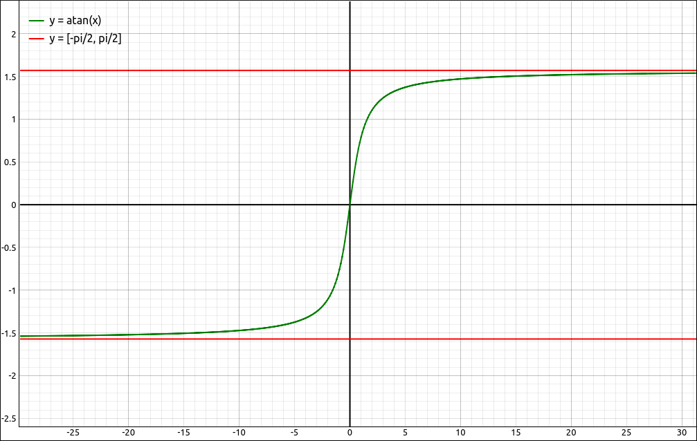
\(f(x) = \tan^{-1}(x)\) with asymptotes.#
Maxima#
To graph the function you can use the following syntax,
kill(all)
f(x):=atan(x)
wxplot2d([f(x)], [x,-20,20], [y,-3,3])
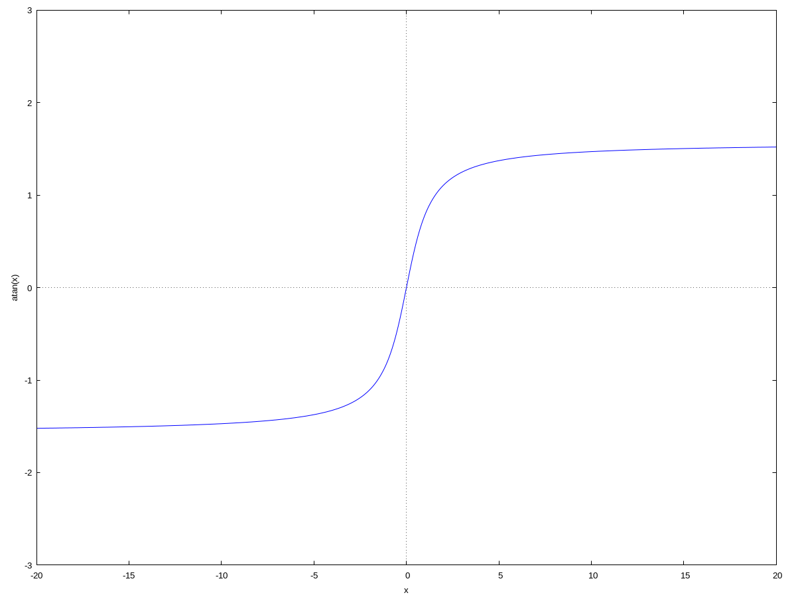
\(f(x) = \tan^{-1}(x)\)#
From the graph it appears that there is a horizontal asymptote to the right at about 1.5 and one to the left at about \(-1.5\). If we use the limit command we get the exact values of \(\pi/2\) and \(-\pi/2\). We can graph these with the curve fairly easily, just put the two values into the function list (don’t forget the %),
wxplot2d([f(x), -%pi/2, %pi/2], [x,-20,20], [y,-3,3])
Then drag them from the CAS to the graph, they should come in as horizontal lines,
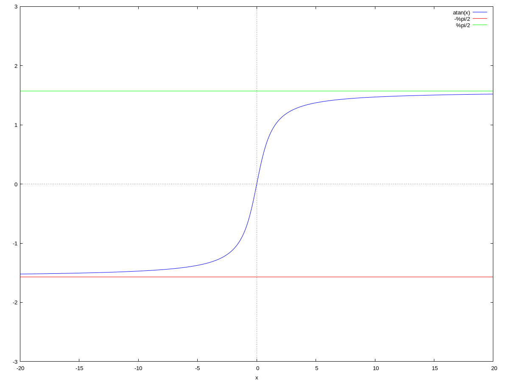
\(f(x) = \tan^{-1}(x)\) with asymptotes.#